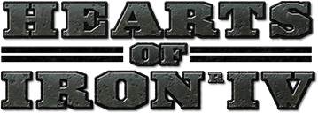

Viool
Sedert ik 8 jaar was beoefende ik het instrument viool.
Deze hobby doe ik nog altijd heel graag. Ik speel de klassieke versie.
Sedert ik 8 jaar was beoefende ik het instrument viool.
Deze hobby doe ik nog altijd heel graag. Ik speel de klassieke versie.
Een van mijn andere hobby's is tekenen, omdat het me de ruimte geeft om creatief te zijn en te ontspannen.
Mijn laatste hobby is gamen, omdat het me helpt te ontspannen en in spannende werelden te duiken.
Een game die ik bijvoorbeeld speel heet HOI4, een strategiespel dat zich focust op WOII.
